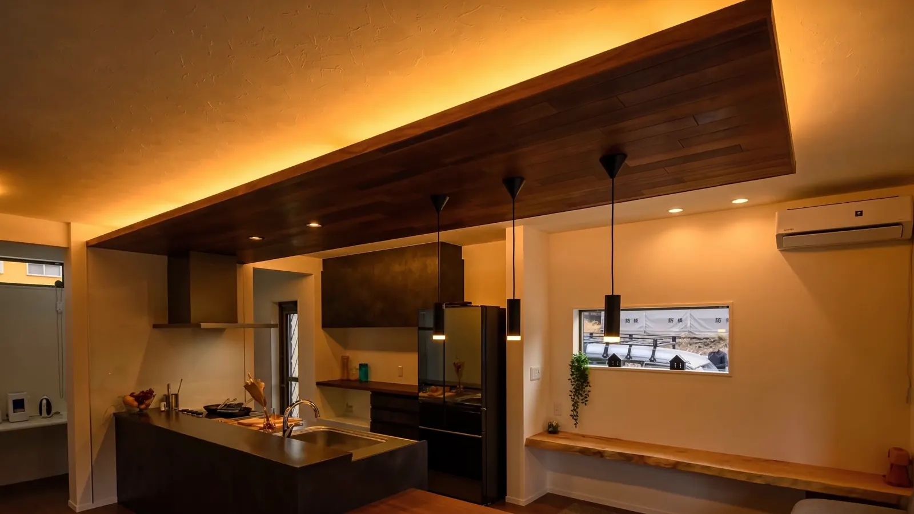
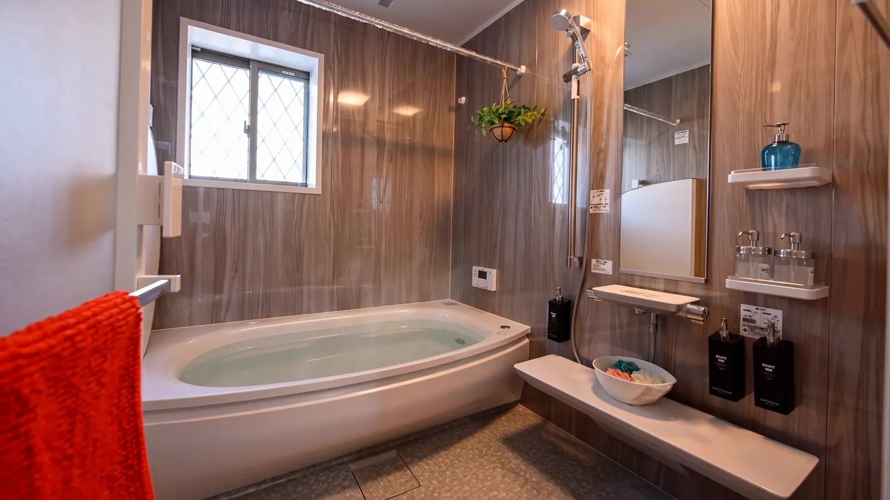
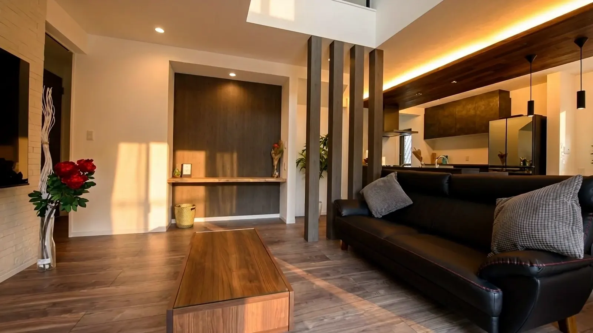

大手の価格に、
動揺した方へ。Nara / Yamato Fudosan
家を買う夢を、
あきらめた方へ。
やまと不動産なら、
お役に立てるかもしれません。
お見積りの後から、
費用は増えません。
※適用条件の詳細は、お見積りの際にご説明します。
Price ── 花鳥風月・やまとの家
2,680万円
この価格で、本当に高品質の家が建ちます。
建物本体価格・税込（「花」「風」／土地別途）
標準装備が、充実しています。
オプションだと思っていた設備が、はじめから付いています。

Kitchen クリナップ ステディア標準
Bath TOTO サザナ 1.25坪標準
Living 天井高2.4m・ハイドア2.3m標準10年後、50年後に、
違いがわかります。
2,680万円で、本当に高品質の家が建ちます。
建物本体価格・税込（「花」「風」／土地別途）
やまと不動産の家を、見に来てください。